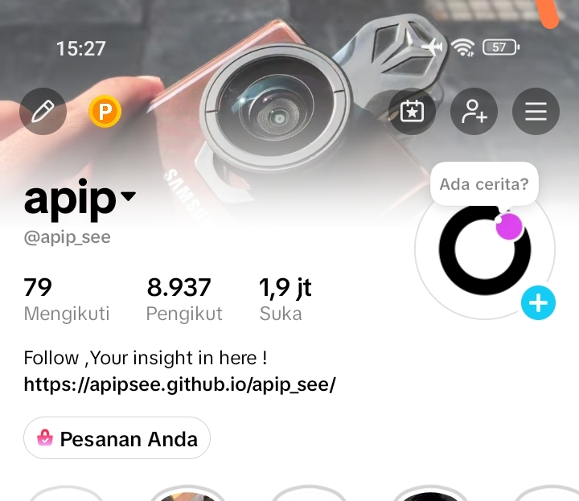
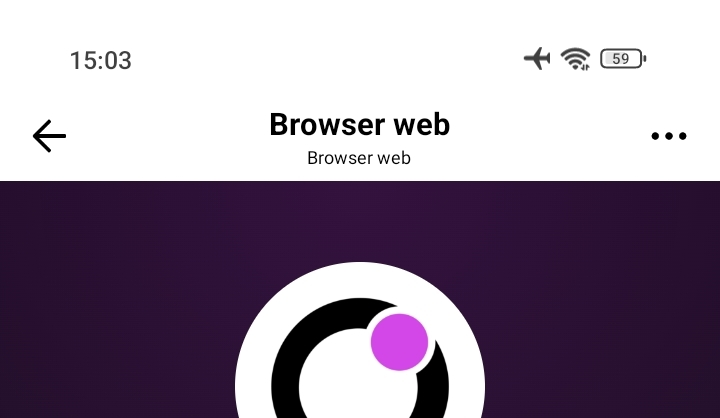
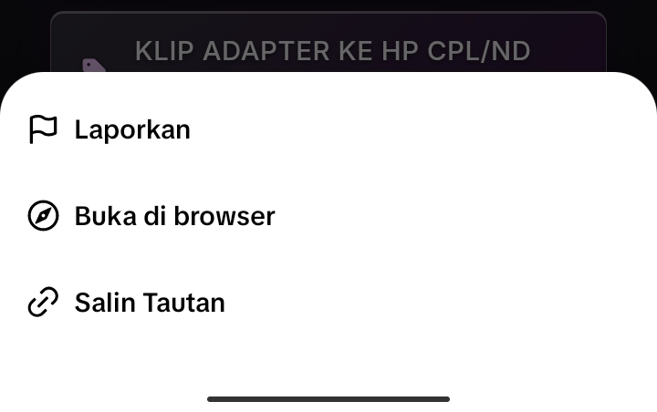
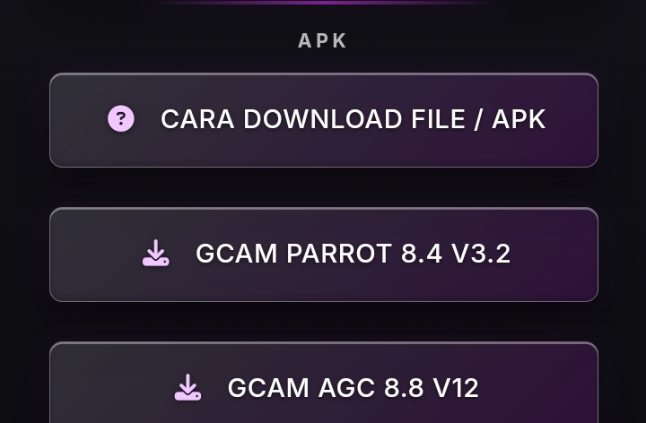
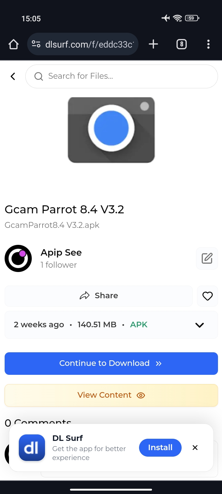
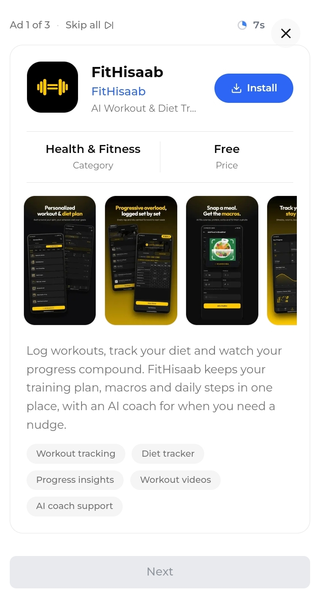
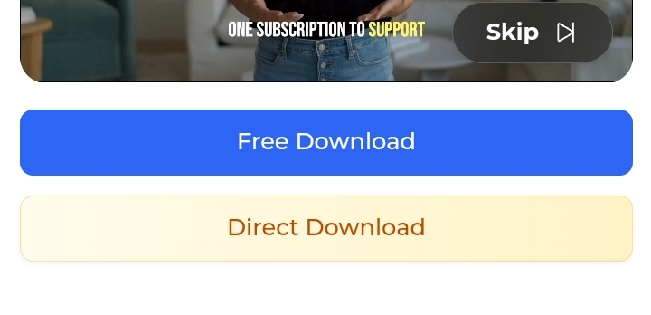
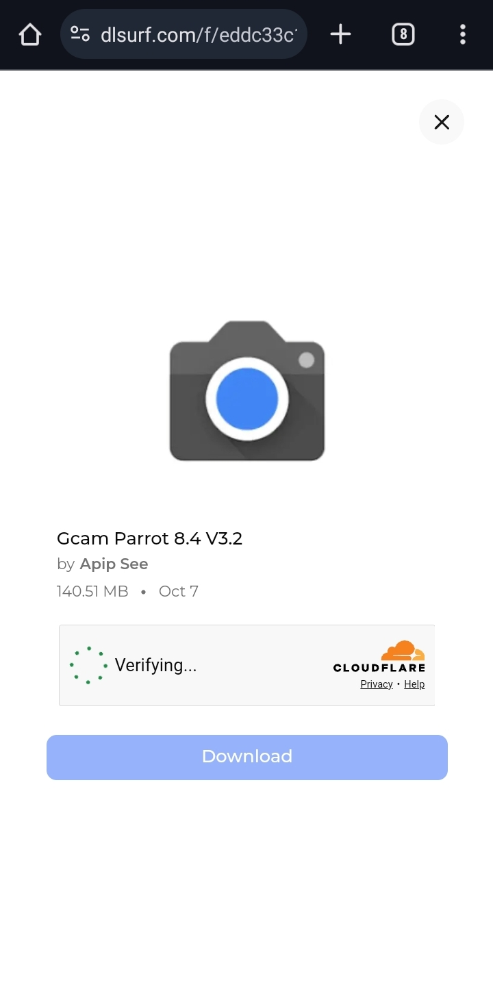
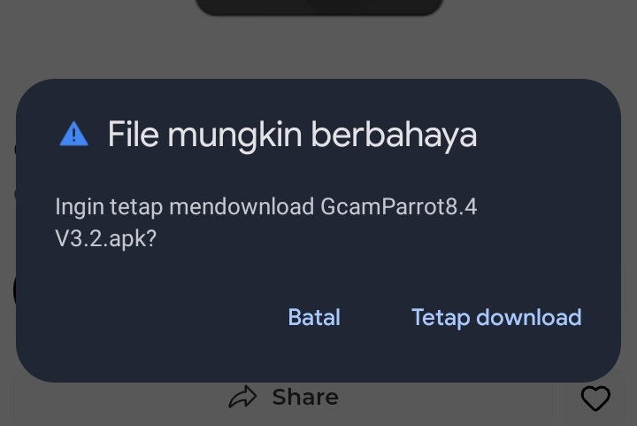

Cara Download
Panduan download file dan APK dari halaman Apip See.
Cara download file / APK
-
Buka profil TikTok Apip See, lalu tekan link website yang ada di bio.

Tekan link website pada bio untuk membuka halaman Apip See. -
Jika link terbuka di browser TikTok, tekan menu lalu pilih Buka di browser agar terbuka di Chrome atau browser eksternal sejenis.

Contoh tombol download setelah link terbuka. 
Pilih “Buka di browser” dari menu TikTok. -
Pilih kotak link sesuai file atau APK yang ingin di-download.

Link akan diteruskan ke browser eksternal. -
Di halaman file, tekan Continue to Download.

Tekan tombol biru untuk melanjutkan. -
Tunggu iklan sampai selesai. Jika tersedia tombol Skip atau next , tekan setelah aktif. Jika tombol Next masih belum aktif, tunggu sampai berubah hijau atau biru lalu tekan. Ulangi sampai muncul tautan download.

Tunggu verifikasi selesai sebelum menekan Download. 
Contoh tampilan tombol untuk melanjutkan download. -
Jika diminta verifikasi, tunggu sampai selesai lalu tekan tombol Free Download,kalau direct download harus login ,buat kalian gausah login gpp.

Peringatan ini muncul saat mengunduh APK. -
Jika Chrome menampilkan peringatan file APK mungkin berbahaya, pilih Tetap download dan file siap di install.

Pilih link download di bagian APK.